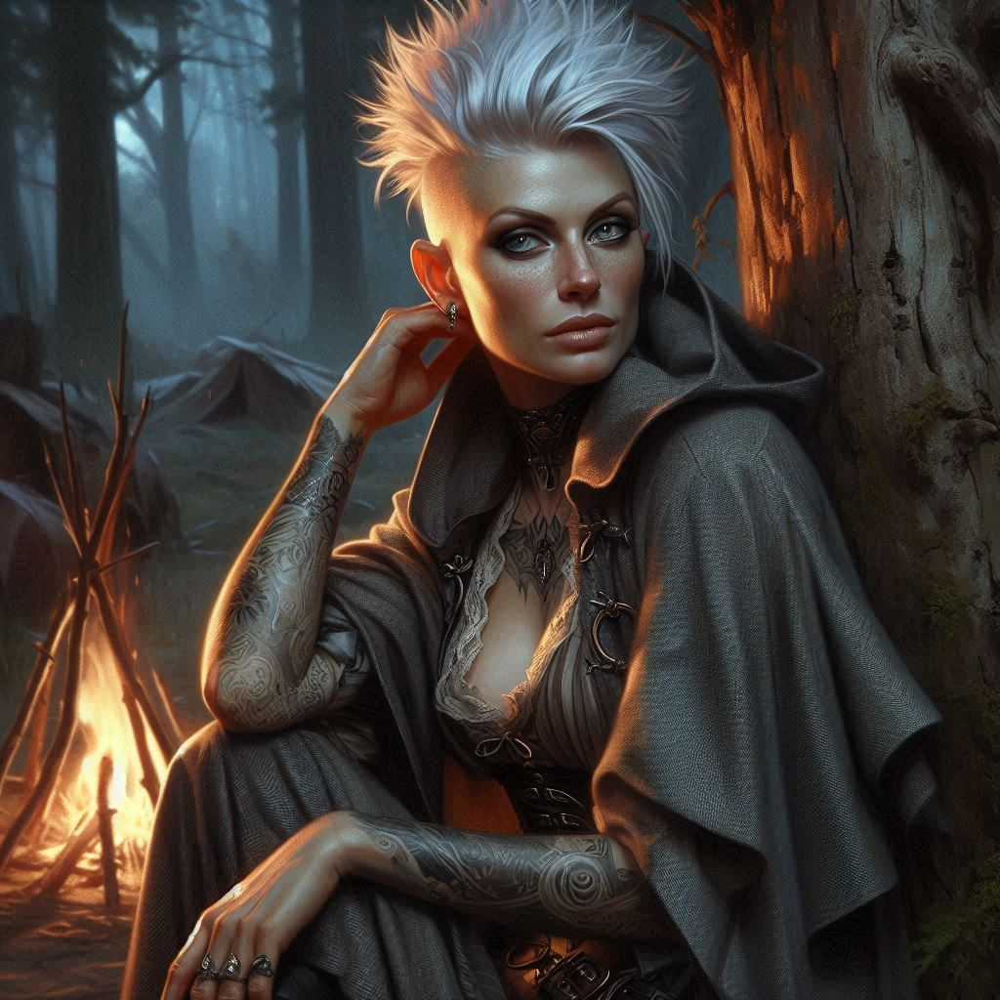

The Kiss and the Witch
You don’t remember falling. You remember your leg throbbing where the mercenary blade slid past your rugged leather armor. You remember the feel of warm liquid… blood… pooling in your boot beneath the wound. One moment, you’re trudging beside Princess Hawthorn beneath a canopy of crooked pines and silver fog. The next, you’re in her arms, consciousness slipping like water through your fingers.
The scent of moss and woodsmoke greets you before your eyes open. A fire crackles softly nearby. Its flickering light dances across the fabric of a hastily-pitched canvas and the smooth curve of polished armor—yours, stripped and stacked neatly beside your bedroll. How long were you unconscious?
Pain shoots up your leg. You groan.
“Don’t move,” says a gentle voice. “You lost a lot of blood.”
You blink. Hawthorn kneels beside you, her long black hair unbound, catching firelight like threads of midnight silk. Her hands glow faintly with healing magic as she presses a cool salve to the gash across your inner thigh.
“How long was I out?” you ask, throat dry.
“An hour. Maybe two. You’re lucky I learned a thing or two from my governess. The healing arts are more practical than court etiquette, turns out.”
You try to sit up, but her hand on your unarmored chest—firm and warm—keeps you down.
“You don’t have to keep playing the hardened ranger,” she says, voice soft as silk. “No one’s watching.”
“Why did you remove my armor?” you ask suspiciously.
“The wound on your leg was bad. I needed to make sure you didn’t get skewered anywhere else.”
You flinch—not from pain, but from something more dangerous: kindness. Attention. Her gaze is unwavering, and it burns you more than your wound. You’ve fought off mercenaries and monsters, but this is different. This is disarming in a way you can’t prepare for.
“Thank you,” you mutter, unsure where to place your hands. Or your eyes.
Then she says, “Let me give you something else. Just for strength.”

You open your mouth to protest, but the incantation is already whispering from her lips like a lullaby in a language you don’t quite understand. Her fingertips graze your cheek. A warmth blooms beneath your skin, slow and heavy, like honey sliding through your veins.
Your heartbeat stumbles. You suddenly notice her striking beauty in a way that somehow eluded you earlier in the day.
“W-what was that?” you ask.
“Nothing dangerous,” she says. “Just... a charm. A moment of honesty between us.”
Her lips are suddenly close to yours. Her breath is mint and magic.
“Help me, Kira,” she murmurs. “Forget Jorsh. Forget your magistrate and their secrets. There’s treasure beneath Hemlock Caverns. Enough to free us both from duty and shadow. Help me find it, and I’ll share it all with you. We’ll be legends, not pawns.”
Her hand finds yours. You don’t pull away.
You want to. You should. But the world feels distant and quiet—except for her voice, her eyes, her touch.
She leans in, and for a heartbeat, you don’t resist. Her lips brush yours—tender and curious. A question more than a command. And you answer without words.
The kiss is fire and silk, half-real in your dazed mind. You feel her smile against your mouth. A smile of triumph... or something else?
And then—steel on stone. A bootstep.
“Am I interrupting?” says a third voice.
You jerk away, breath caught in your throat.
Liora, the court chancellor and governess to Princess Hawthorn, stands just beyond the firelight, arms crossed over her gray robes. Her eyes are flint, her mouth a blade.
“Your Highness,” she says with a venomous calm, “we are less than a mile from a hostile mercenary camp and the gates of an ancient ruin. Perhaps now isn’t the time for seductions.”
You try to sit up again. This time, you succeed.
“I wasn’t—” you start, but Liora cuts you off with a look.
“The scouts returned. The cavern entrance lies just beyond a narrow gulch to the north. The mercenary camp is camped by the old watchtower, half a league west. Either path brings danger.”
Hawthorn rises slowly, brushing soot from her polished armor, but her eyes never leave you.
“It’s your call, Kira,” she says.
And suddenly, you’re cold again.
Two paths lie before you. One—toward the gulch and the mouth of Hemlock Caverns, where secrets fester like wounds and Jorsh may already be inside. You could scout it now, alone, catch your quarry before the others get in your way.
The other—follow Hawthorn and Liora to the mercenary camp. Learn what they know. Perhaps sabotage their plans... or forge a fragile alliance.
Your chest throbs, but not from an injury. The fire pops. The charm still lingers in your blood, a siren’s song just under your skin.
You meet Hawthorn’s gaze, then Liora’s. One offers danger. The other—something far more perilous.